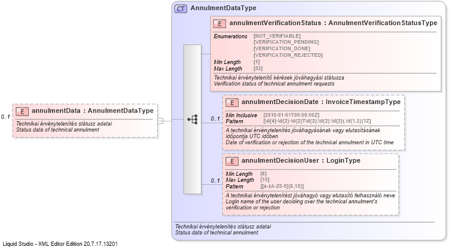

| Definition Type: | Element |
| Name: | annulmentData |
| Namespace: | http://schemas.nav.gov.hu/OSA/3.0/api |
| Type: | nsC:AnnulmentDataType |
| Containing Schema: | invoiceApi.xsd |
| MinOccurs | 0 |
| MaxOccurs | (1) |
| Abstract | |
| Documentation: | Technikai érvénytelenítés státusz adatai Status data of technical annulment |
|  |
|
|
|||||||||||||||||
|
|